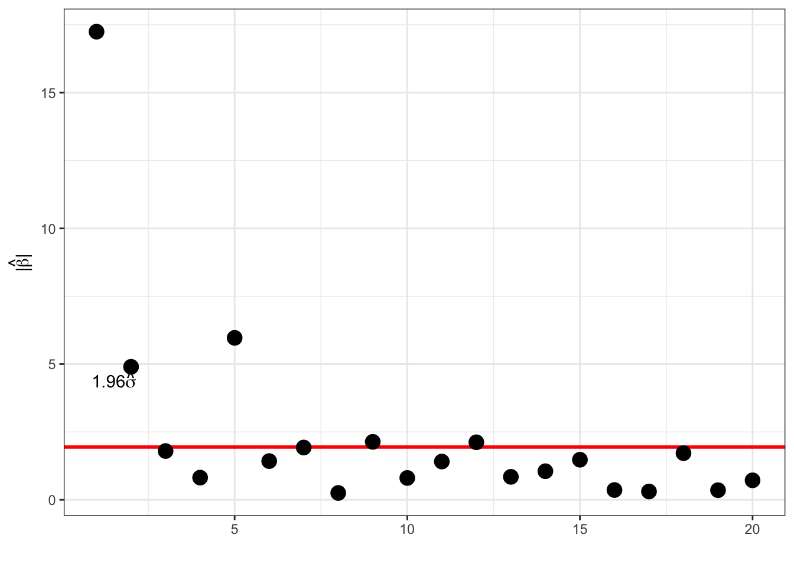
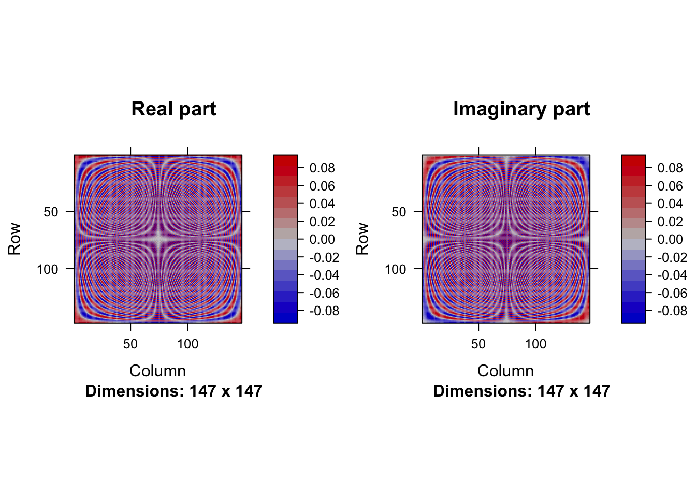
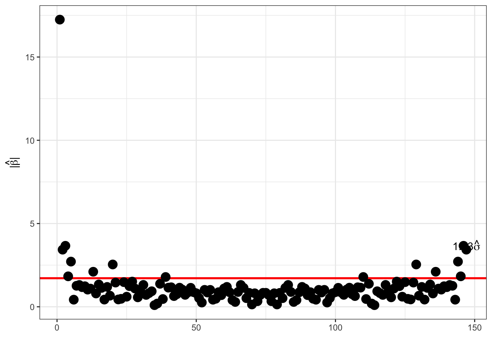
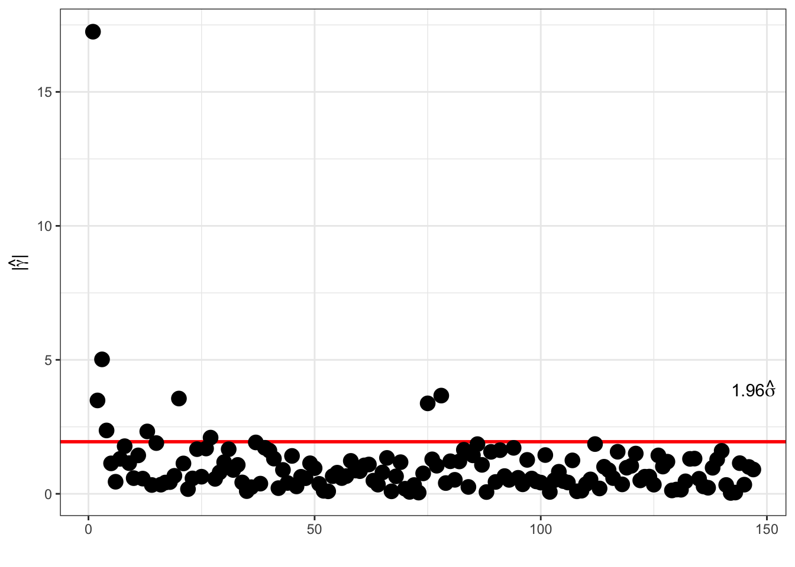
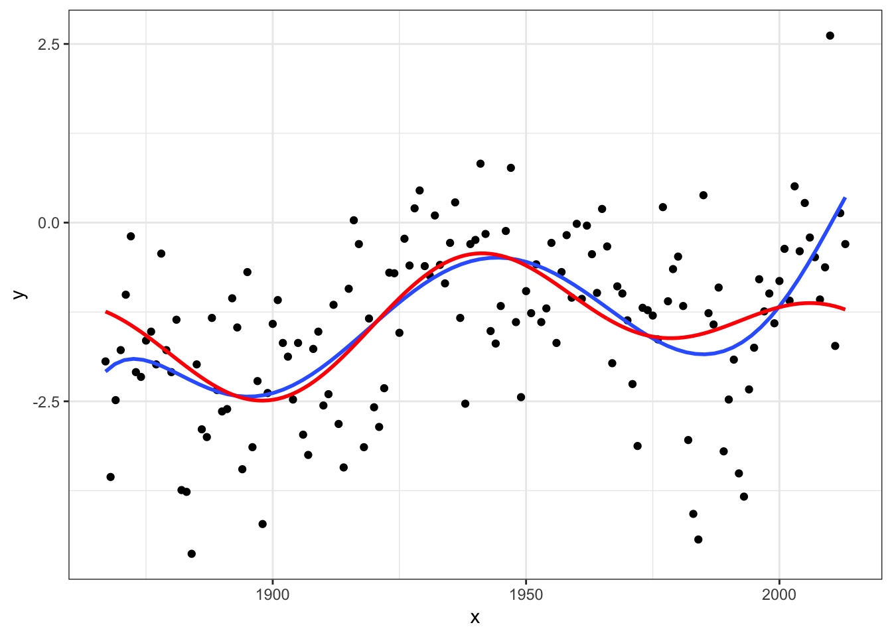

3.3 Basis expansions
3.3.1 Polynomial expansions
Degree 19 polynomial

The model matrix
intercept <- rep(1/sqrt(200), 200)
polylm <- lm(y ~ intercept + poly(x, 19) - 1, data = bivar)
X <- model.matrix(polylm)
X[1:5, 1:10] intercept poly(x, 19)1 poly(x, 19)2 poly(x, 19)3 poly(x, 19)4
1 0.07071068 -0.1218654 0.1557699 -0.1815656 0.2018003
2 0.07071068 -0.1206280 0.1510253 -0.1705062 0.1813153
3 0.07071068 -0.1194281 0.1464706 -0.1600514 0.1623497
4 0.07071068 -0.1181907 0.1418213 -0.1495450 0.1436961
5 0.07071068 -0.1169533 0.1372204 -0.1393151 0.1259391
poly(x, 19)5 poly(x, 19)6 poly(x, 19)7 poly(x, 19)8 poly(x, 19)9
1 -0.21760990 0.22959357 -0.23816564 0.24365837 -0.24631459
2 -0.18448000 0.18066873 -0.17051317 0.15469871 -0.13394890
3 -0.15461499 0.13799690 -0.11381768 0.08361997 -0.04910543
4 -0.12605361 0.09861139 -0.06375853 0.02423082 0.01705362
5 -0.09966962 0.06362414 -0.02149210 -0.02267310 0.06478011
Figure 1.1: The model matrix columns as functions
The model matrix is (almost) orthogonal
image(Matrix(t(X) %*% X))
Estimation with orthogonal design:
(t(X) %*% bivar$y)[1:10, 1] intercept poly(x, 19)1 poly(x, 19)2 poly(x, 19)3 poly(x, 19)4
-12.5674795 35.2385655 -0.8484913 -15.5873696 9.7383642
poly(x, 19)5 poly(x, 19)6 poly(x, 19)7 poly(x, 19)8 poly(x, 19)9
-15.3473035 -5.1107729 2.1143983 0.8003312 0.3117874 coef(polylm)[1:10] intercept poly(x, 19)1 poly(x, 19)2 poly(x, 19)3 poly(x, 19)4
-12.5674795 35.2385655 -0.8484913 -15.5873696 9.7383642
poly(x, 19)5 poly(x, 19)6 poly(x, 19)7 poly(x, 19)8 poly(x, 19)9
-15.3473035 -5.1107729 2.1143983 0.8003312 0.3117874 With an orthogonal design matrix the normal equation reduces to the estimate \[\hat{\beta} = X^T Y\] since \(X^T X = I\).
The predicted (or fitted) values are \(X X^T Y\) with smoother matrix \(S = X X^T.\)
With homogeneous variance \[\hat{\beta}_i \overset{\text{approx}}{\sim} \mathcal{N}(\beta_i, \sigma^2),\] and for \(\beta_i = 0\) we have \(P(|\hat{\beta}_i| \geq 1.96\sigma) \simeq 0.05.\)
Thresholding:


3.3.2 Fourier expansions
Introducing \[x_{k,m} = \frac{1}{\sqrt{n}} e^{2 \pi i k m / n},\] then
\[\sum_{k=0}^{n-1} |x_{k,m}|^2 = 1\]
and for \(m_1 \neq m_2\) \[\sum_{k=0}^{n-1} x_{k,m_1}\overline{x_{k,m_2}} = 0\]
Thus \(X = (x_{k,m})_{k,m}\) is an \(n \times n\) unitary matrix; \[X^*X = I\] where \(X^*\) is the conjugate transposed of \(X\).
\(\hat{\beta} = X^* Y\) is the discrete Fourier transform of \(Y\). It is the basis coefficients in the orthonormal basis given by \(X\); \[Y_k = \frac{1}{\sqrt{n}} \sum_{m=0}^{n-1} \hat{\beta}_m e^{2 \pi i k m / n}\]
or \(Y = X \hat{\beta}.\)
X <- outer(0:199, 0:199,
function(k, m) exp(2 * pi * 1i * (k * m) / 200) / sqrt(200))
image(Matrix(abs(Conj(t(X)) %*% X)), useAbs = FALSE)
The matrix \(X\):

Columns in the matrix \(X\):

We can estimate by matrix multiplication
betahat <- Conj(t(X)) %*% bivar$y # t(X) = X for Fourier bases
betahat[c(1, 2:4, 101, 200:198)][1] -12.567480+ 0.000000i -2.957562+25.186135i 6.896083+14.839667i
[4] 0.499360+ 2.137489i -0.710713- 0.000000i -2.957562-25.186135i
[7] 6.896083-14.839667i 0.499360- 2.137489iFor real \(Y\) it holds that \(\hat{\beta}_0\) is real, and the symmetry \[\hat{\beta}_{n-m} = \hat{\beta}_m^*\] holds for \(m = 1, \ldots, n - 1\). (For \(n\) even, \(\hat{\beta}_{n/2}\) is real too).
Modulus distribution:
Note that for \(m \neq 0, n/2\), \(\beta_m = 0\) and \(Y \sim \mathcal{N}(X\beta, \sigma^2 I_n)\) then
\[(\mathrm{Re}(\hat{\beta}_m), \mathrm{Im}(\hat{\beta}_m))^T \sim \mathcal{N}\left(0, \frac{\sigma^2}{2} I_2\right),\] – hence \[|\hat{\beta}_m|^2 = \mathrm{Re}(\hat{\beta}_m)^2 + \mathrm{Im}(\hat{\beta}_m)^2 \sim \frac{\sigma^2}{2} \chi^2_2,\] that is, \(P(|\hat{\beta}_m| \geq 1.73 \sigma) = 0.05.\)
Thresholding Fourier:

The coefficients are not independent (remember the symmetry), and one can alternatively consider \[\hat{\gamma}_m = \sqrt{2} \mathrm{Re}(\hat{\beta}_m) \quad \text{and} \quad \hat{\gamma}_{n' + m} = - \sqrt{2} \mathrm{Im}(\hat{\beta}_m)\] for \(1 \leq m < n / 2\). Here \(n' = \lfloor n / 2 \rfloor\). Here, \(\hat{\gamma}_0 = \hat{\beta}_0\), and \(\hat{\gamma}_{n/2} = \hat{\beta}_{n/2}\) for \(n\) even.
These coefficients are the coefficients in a real cosine, \(\sqrt{2} \cos(2\pi k m / n)\), and sine, \(\sqrt{2} \sin(2\pi k m / n)\), basis expansion, and they are i.i.d. \(\mathcal{N}(0, \sigma^2)\) distributed.
Thresholding Fourier:

Figure 1.2: Fourier based smoother by thresholding (red)
Using five largest coefficients. Blue is best degree six polynomial fit.
What is the point using the discrete Fourier transform? The point is that the discrete Fourier transform can be computed via the fast Fourier transform (FFT), which has an \(O(n\log(n))\) time complexity. The FFT works optimally for \(n = 2^p\).
fft(bivar$y)[1:4] / sqrt(200)[1] -12.56748+ 0.000000i -2.95756+25.186135i 6.89608+14.839667i
[4] 0.49936+ 2.137489ibetahat[1:4][1] -12.56748+ 0.000000i -2.95756+25.186135i 6.89608+14.839667i
[4] 0.49936+ 2.137489i